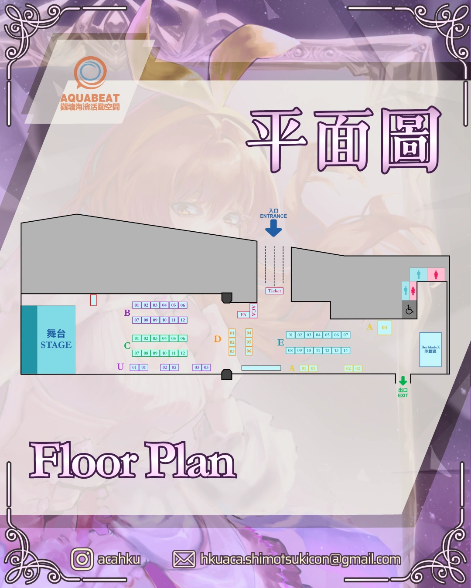
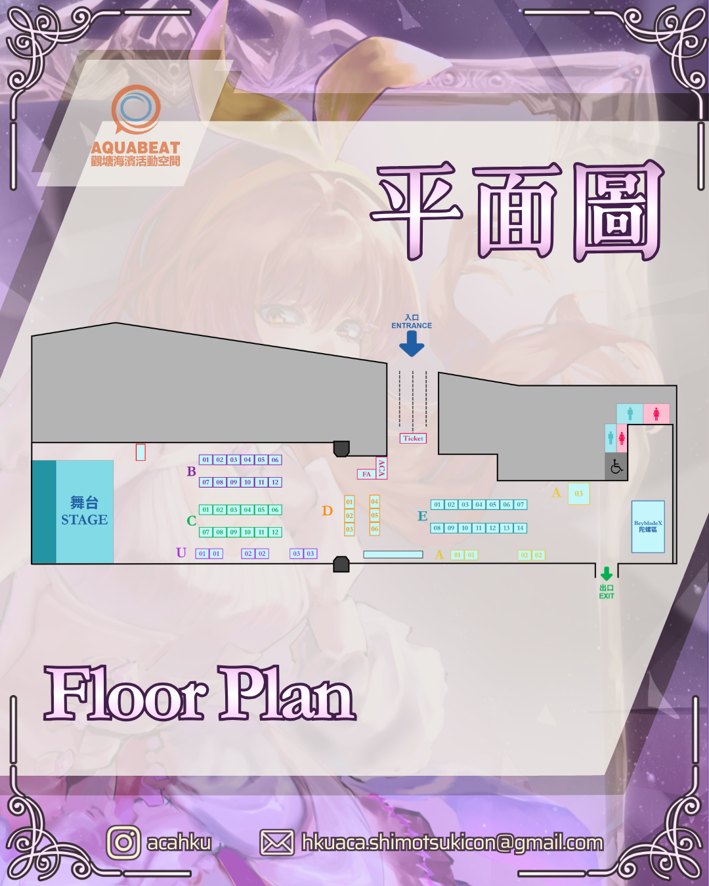

霜月式 · 淬鏡
目錄
EN
☀
明亮模式
動態 ON
MAP
1
2
3
4
5
6
7
場地地圖

放大查看 ＋
觀塘海濱活動空間 03 · 觀塘海濱道 86 號
查看位置 ↗
Enlarge ＋
AquaBeat 03 · 86 Hoi Bun Road
Open location ↗
← 上一頁
下一頁 →
Hekiru
Nozomi
關閉 ✕

−
重設
＋
開啟原圖 ↗
霜月式 · 淬鏡
略過 ↗


 Hekiru
Nozomi
Hekiru
Nozomi